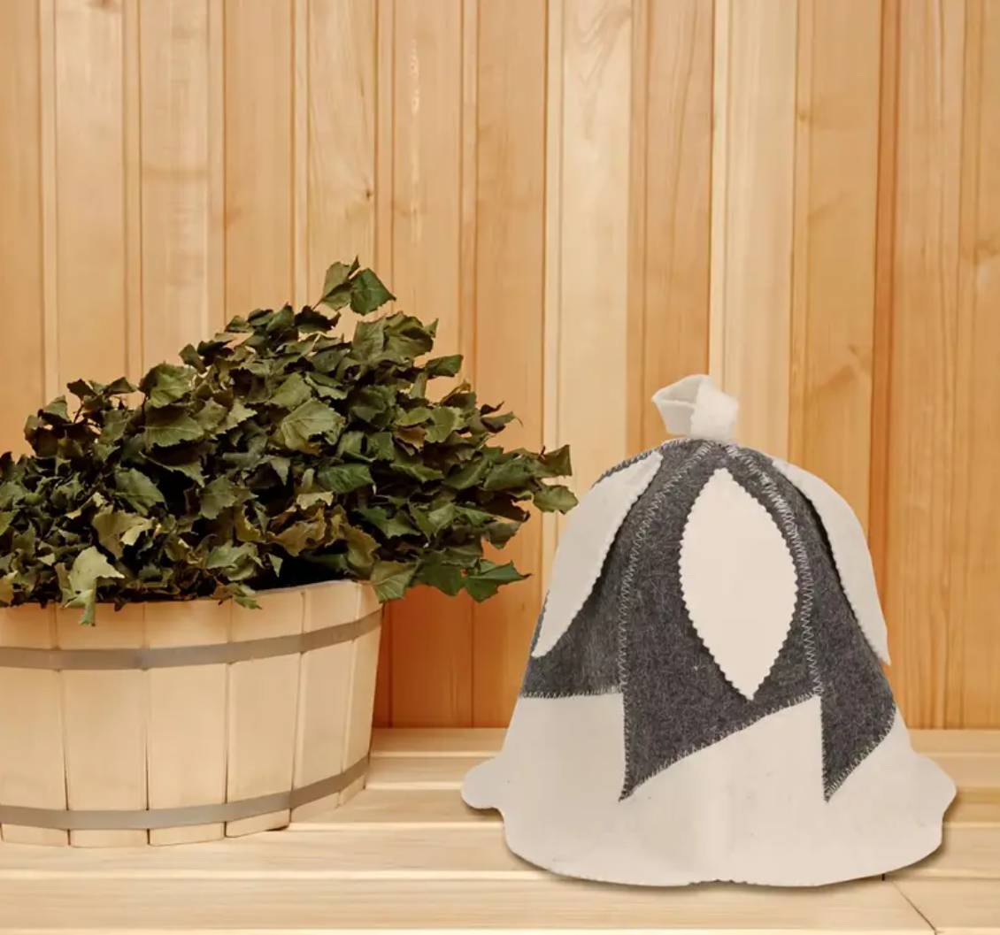

If you've only seen sauna hats in photos, they can look a bit silly. Then you wear one for a full session and it makes sense right away. Here's how to wear one, and how to make it last.
Why wear a sauna hat at all?
In a hot sauna, heat collects at the top of the room, and your head takes the brunt of it. A wool or felt hat acts like insulation, so your head doesn't overheat before the rest of you has warmed up, and it protects your hair from dry heat. That lets you stay comfortable longer and enjoy your session. They're a traditional part of Finnish, Russian and Baltic sauna culture for exactly that reason.
How to put it on
- Start dry or damp. Either is fine. Damp wool feels cooler at first, which some people love.
- Pull it down over your ears. That's where the hat does most of its work. Bell shaped hats like our Belltop and 100% Merino styles are designed to cover the head and ears.
- Check the fit. It should be snug but comfortable and sit steady when you move. Our bucket style, designed with a wider brim, suits people who prefer a looser fit and some shade on the forehead.
- Hair up or down. Long hair can be tucked in or left out. Either works. See our friends at sauna-hat.ca for more on protecting your hair in the sauna.

What to wear with it
Not much. A towel, a swimsuit or whatever's customary where you are. Take off jewellery and glasses, which get hot. In shared saunas, follow house rules: see our guide to sauna etiquette.
Between rounds
Take the hat off when you step out to cool down, or leave it on in cold weather for warmth. If it's very hot out, a quick dip in cool water and back on is nice. Hang it where it can air out while you rest.
How to care for a wool sauna hat
- Air it out. After every session, hang the hat somewhere with good airflow. Don't leave it in a gym bag.
- Keep it away from direct heat. Don't leave it on the sauna stove or heater, or dry it on a radiator. High heat can shrink and stiffen wool.
- Hand wash when needed. Cool water, mild soap, no wringing. Reshape and let it dry naturally.
- Store it dry. A cool, dry spot is best. Wool also benefits from a bit of cedar in a drawer to keep moths away.
Choosing a hat
Ready to pick one? Read what's the best material for a sauna hat, or see our guide to bucket, belltop and merino sauna hats.
Questions
Should I wet my sauna hat first?
You can. Some people dip a wool sauna hat in cool water before they go in, because the damp wool feels refreshing on a hot head. Others wear it dry. Both work, so try each and see what you prefer.
How do I wash a wool sauna hat?
Hand wash gently in cool water with a little mild soap, rinse well, press out the water and let it dry flat or hanging in the air. Don't wring it, machine wash it or put it in a dryer.
Can I wear a sauna hat in a steam room?
Yes. The same wool felt works in a steam room, though you may want to rinse and dry the hat more often.
Shop wool sauna hats, shipped across Canada from Squamish.
Bucket, Belltop and 100% Merino. Free shipping on orders over $75.
More from the journal: 12 Sauna Gift Ideas for the Sauna Lover in Your Life · Sauna Etiquette: 12 Unwritten Rules · What's the Best Material for a Sauna Hat? · Winter Sauna Tips for Canadians: Staying Warm Between Rounds · Bucket, Belltop or Merino? Choosing Your Sauna Hat Style